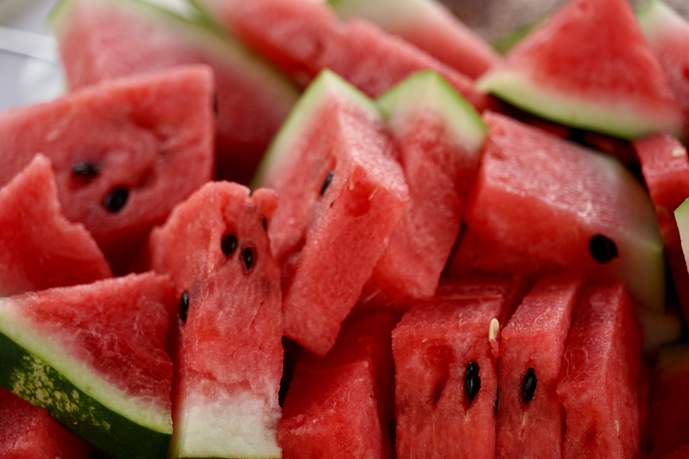
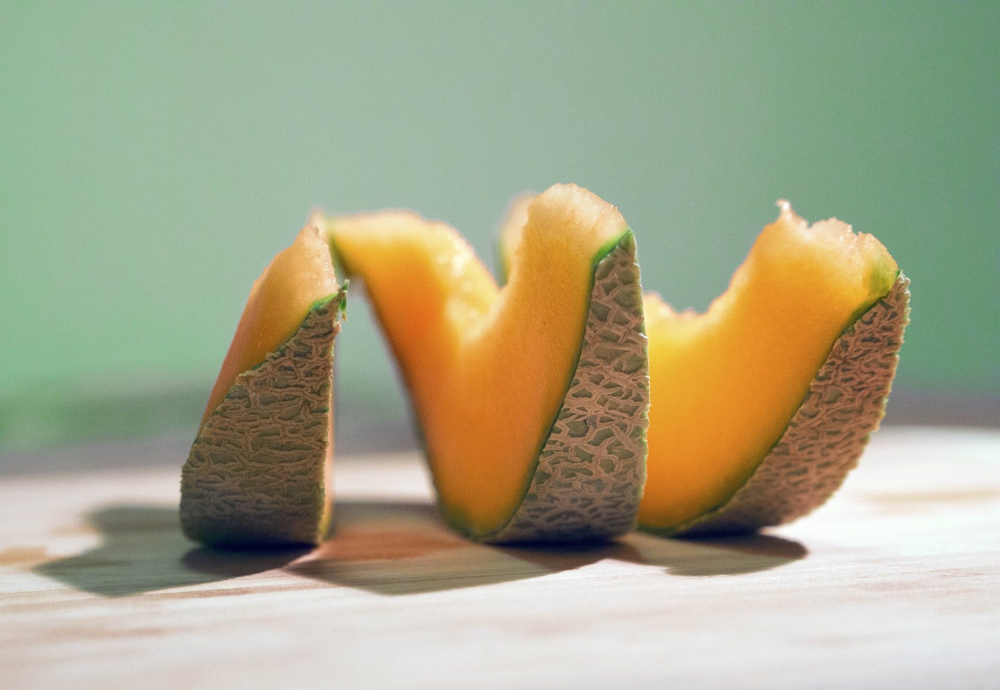
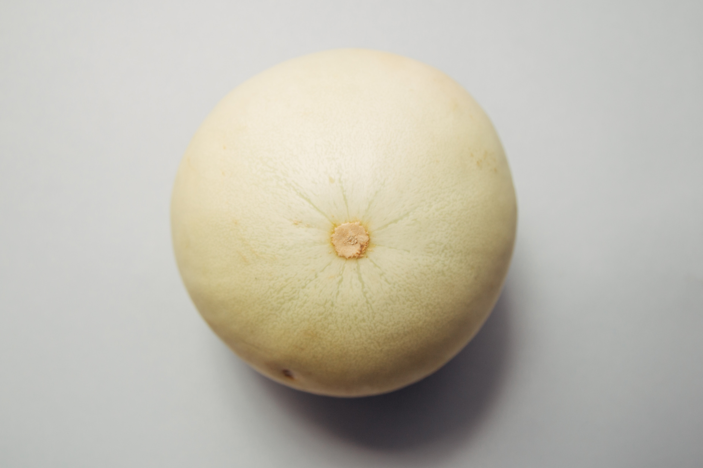

Other

-Watermelons are 92 percent water
-The Japanese grow square watermelon. They place square glass boxes around a growing fruit so it becomes square as it grows.
-Watermelon is grown in 96 countries.
-The white rind of watermelon is also eaten in chinese cuisine

-Cantaloupe are members of a vine-crop family known as Cucurbitaceae, which includes other melons, squash, cucumbers, pumpkins, and gourds.
-An average-sized cantaloupe contains just 100 calories.
-Cantaloupe is packed with Vitamin A and antioxidants such as beta-carotene, lutein, zea-xanthin and cryptoxanthin. That means it helps withprotection against colon, prostate, breast, endometrial, lung, and pancreatic cancers.

-Though typically the flesh of a honeydew melon is green, it can sometimes be orange. This specific type of honeydew is often referred to as the “temptation melon.”
-The ancient Egyptians regarded the honeydew as sacred and it was only reserved for society’s elite.
-Dried and roasted honeydew seeds are popular in various Middle Eastern countries.